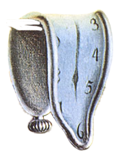
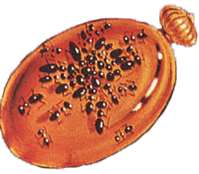
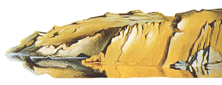
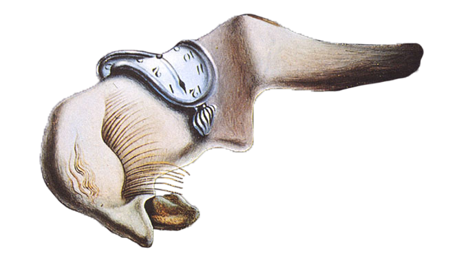
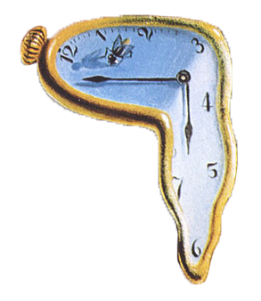
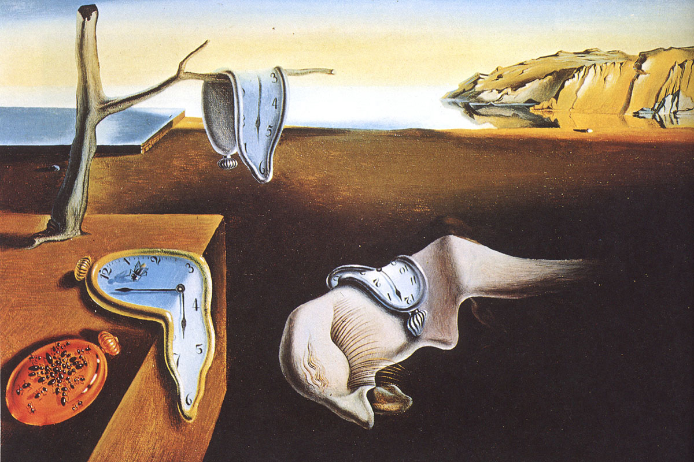

1931
Oil on canvas
24.1 x 33 cm

The year before this picture was painted, Dalí formulated his “paranoiac-critical method,” cultivating self-induced psychotic hallucinations in order to create art. “The difference between a madman and me,” he said, “is that I am not mad.”

Those limp watches are as soft as overripe cheese—indeed, they picture “the camembert of time,” in Dalí’s phrase. Here time must lose all meaning. Permanence goes with it: ants, a common theme in Dalí’s work, represent decay, particularly when they attack a gold watch, and they seem grotesquely organic. The monstrous fleshy creature draped across the painting’s center is at once alien and familiar: an approximation of Dalí’s own face in profile, its long eyelashes seem disturbingly insect-like or even sexual, as does what may or may not be a tongue oozing from its nose like a fat snail.

Hard objects become inexplicably limp in this bleak and infinite dreamscape, while metal attracts ants like rotting flesh. Mastering what he called “the usual paralyzing tricks of eye-fooling,” Dalí painted with “the most imperialist fury of precision,” he said, but only “to systematize confusion and thus to help discredit completely the world of reality.” It is the classic Surrealist ambition, yet some literal reality is included, too: the distant golden cliffs are the coast of Catalonia, Dalí’s home.
